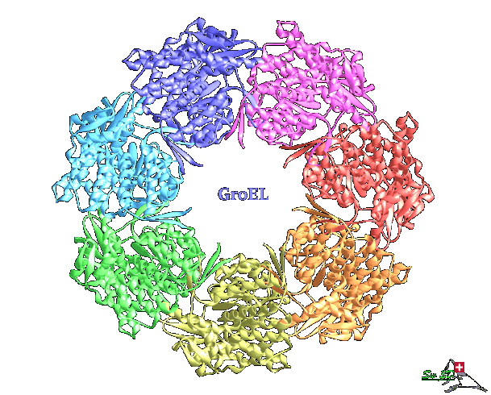

Protein Tertiary Structure
Sites are offered for calculating and displaying the 3-D structure of oligosaccharides and proteins. With the two protein analysis sites the query protein is compared with existing protein structures as revealed through homology analysis.
Background: "Principles of Protein Structure, Comparative Protein Modelling and Visualization" by N. Guex & M.C. Peitsch (GlaxoWellcome, Switzerland) is here. To obtain PDB coordinates for a protein of your interest, go to the Protein Data Bank or NCBI.

-
AlphaFold Server
- is my new favourite web-service that can generate highly accurate
biomolecular structure predictions containing proteins, DNA, RNA, ligands,
ions, and also model chemical modifications for proteins and nucleic acids
in one platform. It's powered by the newest AlphaFold 3 model.
(Reference: Abramson, J et al. (2024) Nature 630(8016): 493-500). -
PHYRE2.2
- Protein Homology/analogY Recognition Engine - this was my favourite site
for the prediction of the 3D structure of proteins. In each case I have
used this site it has provide me with a model. Phyre2 uses the alignment
of hidden Markov models via HHsearch to significantly improve accuracy of
alignment and detection rate. It also incorporates a new ab initio folding
simulation called Poing to model regions of your proteins with no
detectable homology.
(Reference: Kelley LA et al. Nature Protocols 10: 845-858 (2015)). -
FALCON2
- is a a web server that integrates ProALIGN and ProFOLD to provide
high-quality protein structure prediction service. For a target protein,
FALCON2 executes ProALIGN and ProFOLD simultaneously to predict possible
structures and selects the most likely one as the final prediction result.
We evaluated FALCON2 on widely-used benchmarks, including 104 CASP13 (the
13th Critical Assessment of protein Structure Prediction) targets and 91
CASP14 targets. In-depth examination suggests that when high-quality
templates are available, ProALIGN is superior to ProFOLD and in other
cases, ProFOLD shows better performance. By integrating these two
approaches with different emphasis, FALCON2 server outperforms the two
individual approaches and also achieves state-of-the-art performance
compared with existing approaches
(Reference: Kong L et al. 2021. BMC Bioinformatics 22(1): 439). -
trRosetta
(transform-restrained Rosetta) - is a web-based platform for fast and
accurate protein structure prediction, powered by deep learning and
Rosetta. With the input of a protein's amino acid sequence, a deep neural
network is first used to predict the inter-residue geometries, including
distance and orientations. The predicted geometries are then transformed as
restraints to guide the structure prediction on the basis of direct energy
minimization, which is implemented under the framework of Rosetta
(Reference: Du Z et al. 2021. Nature Protocols 16: 5634–5651) -
TopSuite
- is a web server for protein model quality assessment (TopScore) and
template-based protein structure prediction (TopModel). TopScore provides
meta-predictions for global and residue-wise model quality estimation using
deep neural networks. TopModel predicts protein structures using a top-down
consensus approach to aid the template selection and subsequently uses
TopScore to refine and assess the predicted structures
(Reference: Mulnaea D et al. 2021. J Chem Inf Model. 61(2): 548-553). -
SWISS-MODEL
- (Expasy web server, Switzerland) An automated comparative protein
modelling server which requries login
(Reference: Waterhouse A et al. 2018. Nucleic Acids Res. 46: W296-W303) -
ORION
- is a web server for protein fold recognition and structure prediction
using evolutionary hybrid profiles. Various databases such as PDB, SCOP and
HOMSTRAD can be mined to find an appropriate structural template. For the
modeling step, a protein 3D structure can be directly obtained from the
selected template by MODELLER and displayed with global and local quality
model estimation measures.
(Reference: Ghouzam Y et al. (2016) Scientific Reports 6: 28268). -
I-TASSER
- (Iterative Threading ASSEmbly Refinement) - 3D models are built based on
multiple-threading alignments by LOMETS and iterative TASSER simulations;
function inslights are then derived by matching the predicted models with
protein function databases. I-TASSER was ranked as the No 1 server for
protein structure prediction in recent CASP7 and CASP8 experiments.
(Reference: A. Roy et al. 2010. Nature Protocols 5: 725-738) -
Robetta
- is a protein structure prediction service that is continually evaluated
through CAMEO. It features include an interactive submission interface that
allows custom sequence alignments for homology modeling, constraints, local
fragments, and more. It can model multi-chain complexes and provides the
option for large scale sampling. It uses the PDB100 template database,
which is updated weekly, a co-evolution based model database (MDB), and
also provides the option for custom templates.
(Reference: Kim DE et al. (2004) Nucleic Acids Res; 32(Web Server issue): W526-531). -
PEP-FOLD 3
is a de novo approach aimed at predicting peptide structures from amino
acid sequences. This method, based on structural alphabet SA letters to
describe the conformations of four consecutive residues, couples the
predicted series of SA letters to a greedy algorithm and a coarse-grained
force field.
(Reference: Lamiable A, et al. Nucleic Acids Res. 2016; 44(W1): W449-54). -
AS2TS system
- offers a variety of resources for protein structural analysis using the
LGA (local-global alignment) program to search for regions of local
similarity and to evaluate the level of structural similarity between
compared protein structures. To facilitate the homology-based protein
structure modeling process, the AL2TS service translates given
sequence–structure alignment data into the standard PDB coordinates
(Reference: A. Zemla et al. 2005. Nucl. Acids Res. 33: W111-W115). - WHAT IF Web Interface (Centre for Molecular and Biomolecular Informatics, University of Nijmegen, Holland) offers one a large number of tools for examining PDB files.
-
InterProSurf
- predicts interacting amino acid residues in proteins that are most likely
to interact with other proteins, given the 3D structures of subunits of a
protein complex. The prediction method is based on solvent accessible
surface area of residues in the isolated subunits, a propensity scale for
interface residues and a clustering algorithm to identify surface regions
with residues of high interface propensities.
(Reference: S.S. Negi et al. 2007. Bioinformatics. 23: 3397-3399) -
PSIPRED
Protein Sequence Analysis Workbench - includes PSIPRED v3.3 (Predict
Secondary Structure); DISOPRED3 & DISOPRED2 (Disorder Prediction);
pGenTHREADER (Profile Based Fold Recognition); MEMSAT3 & MEMSAT-SVM
(Membrane Helix Prediction); BioSerf v2.0 (Automated Homology Modelling);
DomPred (Protein Domain Prediction); FFPred 3 (Eukaryotic Function
Prediction); GenTHREADER (Rapid Fold Recognition); MEMPACK (SVM Prediction
of TM Topology and Helix Packing) pDomTHREADER (Fold Domain Recognition);
and, DomSerf v2.0 (Automated Domain Modelling by Homology).
(Reference: Buchan DWA et al. 2013. Nucl. Acids Res. 41 (W1): W340-W348). - MODELLER - comparative protein structure modelling by satisfaction od spacial constrains
Structures derived from NMR coordinates:
-
CS23D2.0
- is a web server for rapidly generating accurate 3D protein structures
using only assigned NMR chemical shifts as input. Unlike conventional NMR
methods, which require NOE and/or J-coupling data, CS23D2.0 uses only
chemical shift information to generate a 3D structure of the protein of
interest. CS23D2.0 accepts chemical shift files in either SHIFTY or BMRB
formats and produces a set of PDB coordinates for the protein in about
10-15 minutes. CS23D2.0 uses a combination of maximal subfragment assembly,
chemical shift threading, shift-based torsion angle prediction and chemical
shift refinement to generate and refine the protein coordinates.
(Reference: Wishart DS et al. (2008) Nucleic Acids Res. 36(Web Server issue): W496-502). -
PROSESS
(Protein Structure Evaluation Suite & Server) - is a web server designed to
evaluate and validate protein structures solved by either X-ray
crystallography or NMR spectroscopy. PROSESS integrates a variety of
previously developed, well-known and thoroughly tested methods to evaluate
both global and residue-specific
(Reference: Berjanskii M et al (2010). Nucleic Acids Res. 38(Web Server issue): W633-640).
Once you have a structure you will want to view it or superimpose it on other related molecules. To obtain PDB accession codes for a protein of your interest, go to the Protein Data Bank
-
Mol* 3D Viewer
(Reference: Schnal D et al. 2021. Nucleic Acids Res. 49(W1): W431-W437);
3dRS (3D Representation Sharing;
(Reference: Bayarri G et al. 2021 Front Mol Biosci 8: 726232);
Jena3D Viewer (Institute of Molecular Biotechnology (IMB), Jena, Germany); PDBms
(Reference: Kumar TA. 2023. Interdisciplinary Sciences: Computational Life Sciences 15: 146–153);
EzMol
(Reference: Reynolds CR et al. 2018. J Mol Biol 430(15): 2244-2248); -
FATCAT
(Flexible structure AlignmenT by Chaining Aligned fragment pairs allowing
Twists) is an approach for flexible protein structure comparison. It
simultaneously addresses the two major goals of flexible structure
alignment; optimizing the alignment and minimizing the number of rigid-body
movements (twists) around pivot points (hinges) introduced in the reference
structure.
(Reference: Y.Ye & A. Godzik. (2003) Bioinformatics 19: suppl. 2. ii246-ii255).
This website provides access to a wide range of protein tools. -
MulPBA
(multiple Protein Block Alignment) - is a tool for comparison of protein
structures based on similarity in the local backbone conformation. The
local backbone conformation is defined as pentapeptide dihedrals
(Reference: Léonard S et al. (2014) J Biomol Struct Dyn. 32(4): 661-668). - 3D-Match - Comparing 3D structures of two proteins (Softberry)
-
iPBA
- is a tool for comparison of protein structures based on similarity in the
local backbone conformation. It presents an improved alignment approach
using (i) specialized PB Substitution Matrices (SM) and (ii) anchor-based
alignment methodology.
(Reference: Gelly, J.C. et al. 2011. Nucleic Acids Res. 39(Web Server issue):W18-23). -
MAPSCI
Multiple Alignment of Protein Structures and Consensus Identification. The
algorithm represents each protein as a sequence of triples of coordinates
of the alpha-carbon atoms along the backbone. It then computes iteratively
a sequence of transformation matrices (i.e., translations and rotations) to
align the proteins in space and generate the consensus. The algorithm is a
heuristic in that it computes an approximation to the optimal alignment
that minimizes the sum of the pairwise distances between the consensus and
the transformed protein.
(Reference: Ilinkin, I. et al. 2010. BMC Bioinformatics. 11:71). -
Rclick
- this web server that is capable of superimposing RNA 3D structures by
using clique matching and 3D least-squares fitting. Rclick has been
benchmarked and compared with other popular servers and methods for RNA
structural alignments. In most cases, Rclick alignments were better in
terms of structure overlap. It also recognizes conformational changes
between structures.
(Reference: Nguyen MN, & Verma C. 2015. Bioinformatics 31:966-968).
Presentation of data:
-
The NGL Viewer
is a web application for the visualization of macromolecular structures. By
fully adopting capabilities of modern web browsers, such as WebGL, for
molecular graphics, the viewer can interactively display large molecular
complexes and is also unaffected by the retirement of third-party plug-ins
like Flash and Java Applets. Beautiful output.
(Reference: A.S. Rose & P.W. Hildebrand. 2015. Nucl. Acids Res. 43 (W1): W576-W579).
Predict Function from Structure:
-
CUPSAT
- Cologne University Protein Stability Analysis Tool - predicts changes in
protein stability upon point mutations. The prediction model uses amino
acid-atom potentials and torsion angle distribution to assess the amino
acid environment of the mutation site. Additionally, the prediction model
can distinguish the amino acid environment using its solvent accessibility
and secondary structure specificity.
(Reference: Parthiban V, et al. (2006) Nucleic Acids Research, 34: W239-42). -
Eris
- is a protein stability prediction server. This server calculates the
change of the protein stability induced by mutations (ΔΔG) utilizing the
recently developed Medusa modeling suite. In our test study, the ΔΔG values
of a large dataset (>500) were calculated and compared with the
experimental data and significant correlations are found. The correlation
coefficients vary from 0.5 to 0.8. Eris also allows refinement of the
protein structure when high-resolution structures are not available.
(Reference: Yin, F. et al. Nature Methods 4: 466-467; 2007).
Requires registration. -
AUTO-MUTE
- AUTOmated server for predicting...functional consequences of amino acid
MUTations in protEins - is a suite of programs measuring stability changes
(ΔΔG, ΔΔGH2O, and ΔTm).
(Reference: Masso M. & Vaisman I.I. (2010) Protein Eng. Des. Sel. 23: 683-687). -
DUET
- Protein Stability Change Upon Mutation - a web server for an integrated
computational approach for studying missense mutations in proteins. DUET
consolidates two complementary approaches (mCSM and SDM) in a consensus
prediction, obtained by combining the results of the separate methods in an
optimised predictor using Support Vector Machines (SVM).
(Reference: D.E.V. Pires et al. 2015. Nucl. Acids Res. 42(1): W314-W319)
Pockets (active sites) in 3D structures of proteins:
-
metaPocket
- Identification of cavities on protein surface using multiple
computational approaches for drug binding site prediction
(Reference: Zhang, Z. et al. 2011. Bioinformatics, 27: 2083-2088). -
POCASA
(POcket-CAvity Search Application) is an automatic program that implements
the algorithm named Roll which can predict binding sites by detecting
pockets and cavities of proteins of known 3D structure.
(Reference: Yu, J. et al. 2010. Bioinformatics; 26: 46-52). -
Fpocket suite
- three servers are available: (a) Fpocket: perform simple pocket
detection; (b) MDpocket: track pockets in molecular dynamics; and, (c)
Hpocket: view conserved pockets withing homologous proteins
(Reference: Schmidtke P et al. 2009. Nucleic Acids Res.10:168).
Mutation and crystallization:
-
SERp
Surface Entropy Reduction prediction - SERp is an exploratory tool to aid
identification of sites that are most suitable for mutation designed to
enhance crystallizability by a Surface Entropy Reduction approach.
(Reference: Goldschmidt L et al. 2007. Protein Sci. 16:1569-76). -
XtalPred
crystallizability classification is based on statistics on non-secreted
wild-type microbial proteins and is optimized for identifying the most
promising crystallization targets from large protein families. XtalPred is
also helpful in construct design, although crystalizability class itself is
usually not a sufficient criterion to find precise construct boundaries.
(Reference: Slabinski L et al. (2007) Bioinformatics. 23(24): 3403-3405).
Metasite:
- Scratch Protein Predictor - (Institute for Genomics and Bioinformatics, University California, Irvine) - programs include: ACCpro: the relative solvent accessibility of protein residues; CMAPpro: Prediction of amino acid contact maps; COBEpro: Prediction of continuous B-cell epitopes; CONpro: predicts whether the number of contacts of each residue in a protein is above or below the average for that residue; DIpro: Prediction of disulphide bridges; DISpro: Prediction of disordered regions; DOMpro: Prediction of domains; SSpro: Prediction of protein secondary structure; SVMcon: Prediction of amino acid contact maps using Support Vector Machines; and, 3Dpro: Prediction of protein tertiary structure (Ab Initio).
Updated: December, 2025